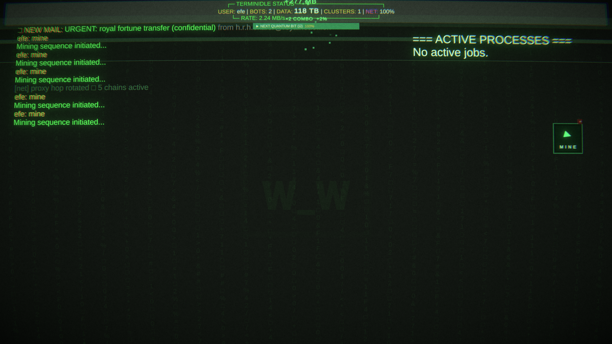
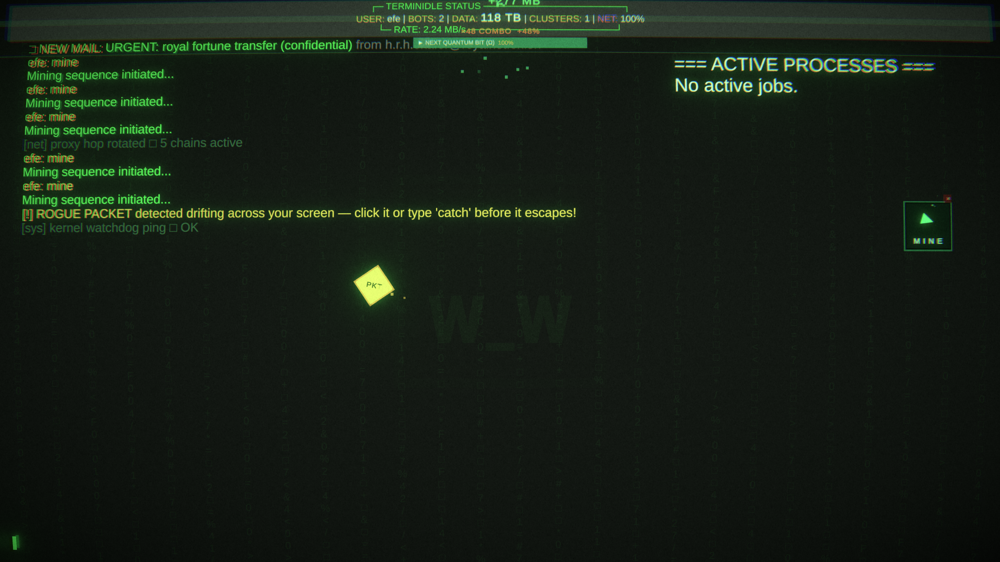
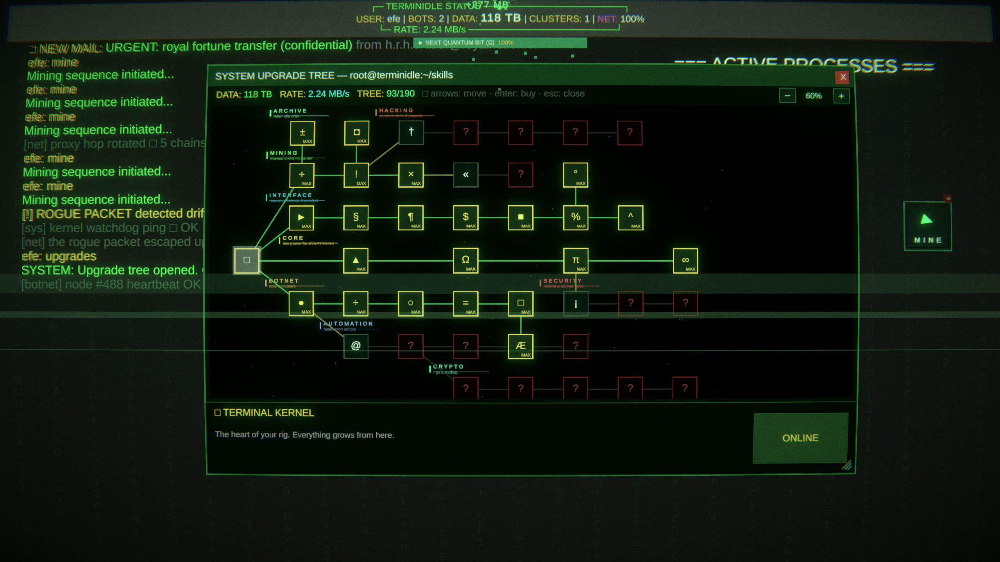
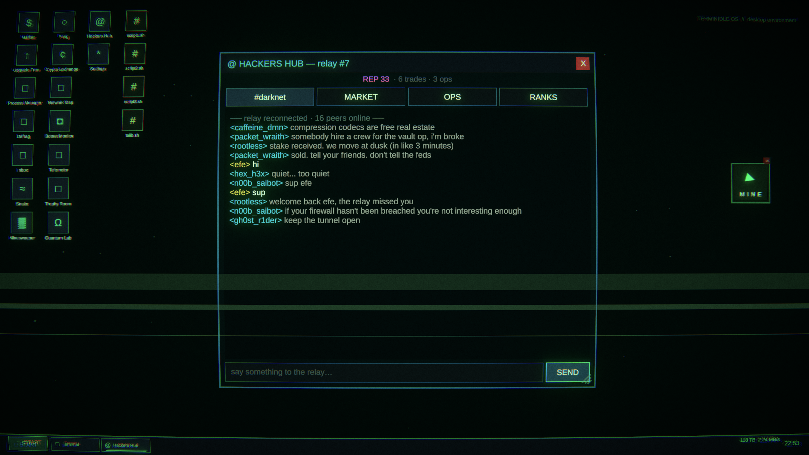
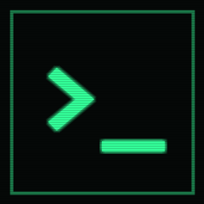
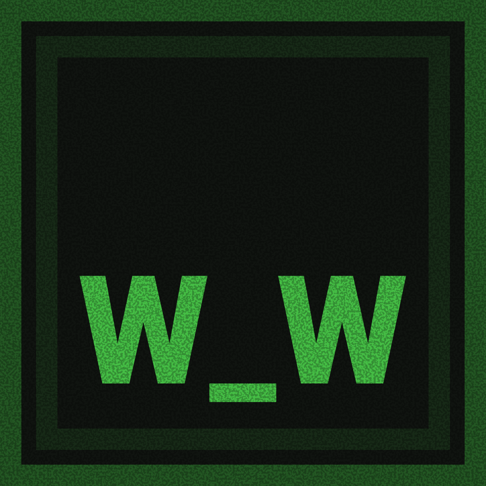
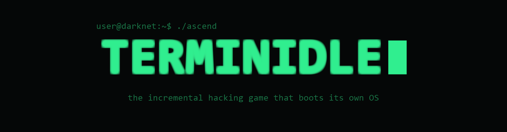
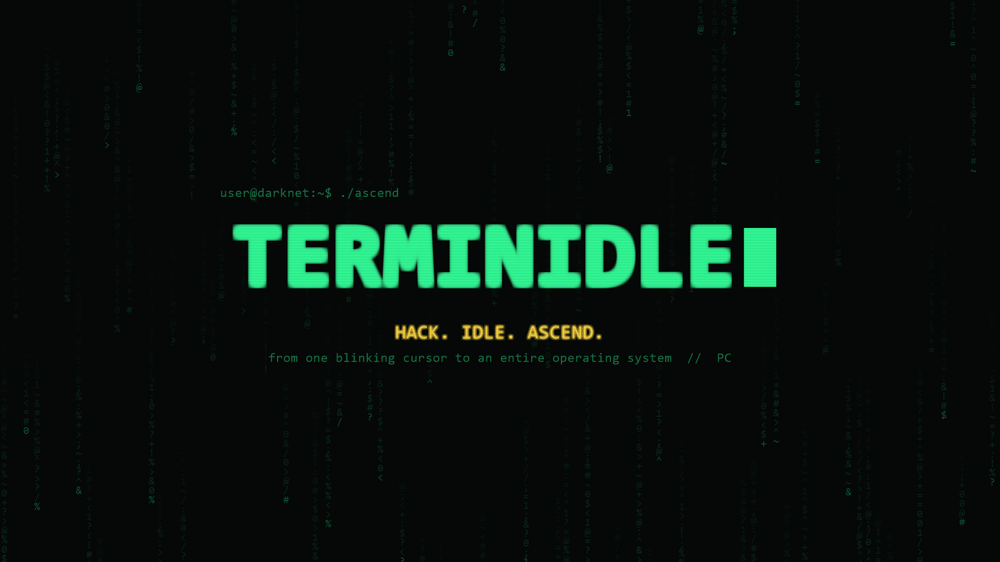
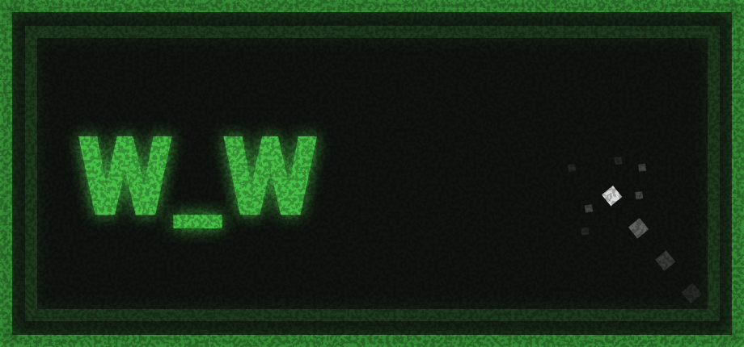

TERMINIDLE
Factsheet
| Game | TERMINIDLE |
| Genre | Incremental / Idle / Nodebuster-like hacking game |
| Developer | Zero Task |
| Based in | Turkey |
| Engine | Unity 6 (URP) |
| Platforms | Windows, Linux |
| Release date | Early September 2026 |
| Price | $4.99 (Based on USA pricing, will be converted to local currencies) |
| Languages | English (other languages are in development for the full game) |
| Press contact | ataseverefeyagiz@gmail.com |
| Social | Website | Instagram | Twitter | LinkedIn | Discord |
Demo Download
This is a preview build. Please don't reshare the link publicly. Having trouble downloading? Email ataseverefeyagiz@gmail.com and I'll sort you out.
Description
TERMINIDLE starts you with nothing but a blank terminal screen. Actual nothing:
No mouse cursor (that's an upgrade), no sound (speakers are hardware
you have to buy), no in game UI windows (comfort is a concept that you have to earn).
The goal is gaining data from various (and questionable) sources. You start of manually, by typing mine, one byte arrives, and the whole game grows out of that moment.
The early hours are played out entirely in the terminal: Buy bots that mine data for you, merge bots into clusters which are more efficient,
then start to fill a 40+ node skill tree.
Take hacking contracts where you have to type commands with speed and accuracy multiply the data payout, and defend yourself against rival hackers breaching your firewall.
THIS IS THE BREAKING POINT: When you've got enough data, you can buy the DESKTOP ENVIRONMENT and the terminal shrinks into a window on a full graphical OS. Taskbar, start menu, draggable windows, desktop widgets, your own wallpaper. Everything you built becomes an app, and new ones appear: arcade classics (SNAKE, PONG, MINESWEEPER) that pay real data, an inbox with typed work orders, scams, and one very persistent Nigerian prince,
And of course: A Darknet Hub with a chat full of players in the world!.. In the full game. In the demo, they will be suspiciously human-like bots (the game is honest about it). There's black-market deals from other players, there's hacking ops where you'll team up with other players to hack a big organization or a government.
Finally, the QUANTUM LAB: ascend and trigger a total system wipe where the game takes every upgrade, every item, the OS itself from your hands, traded for Quantum Bits, some upgrades and Ascend Level which is important in Darknet Hub along with your REP. Only your trophies, records, and darknet reputation survive. Everything else, you get to build again, faster, and by choice.
Features
- Everything is earned: the mouse cursor, audio, and UI elements such as settings, shop, stats windowsare upgrades. The game begins 100% keyboard.
- A real command line: 40+ commands, context-aware "tab" key completion, in-game man/help pages. Every UI element is optional and everything can be done via commands.
- A 40+ node skill tree: Where each purchase reveals the next node, across mining, botnet, hacking, crypto and interface branches.
- Typed hack contracts: Break in fast and clean for multiplied rewards.
- RIG BAY Overclocking: Buy CPU/GPU/PSU/cooler parts, overclock them for more data gain while managing heat. If you push too hard a component burns until you replace it.
- TERMINIDLE OS: The game that boots its own desktop: taskbar, start menu, right-click menus, buyable live widgets, custom wallpaper.
- Arcade apps that pay: SNAKE, PONG, MINESWEEPER and disk-defrag, wired into the real economy.
- A darknet with personality: Simulated peer chat that reacts to your milestones, shady market sellers, real-time crew heists that resolve while the game is closed, an ascension leaderboard.
- Rogue packets, mining combos, personal-best records: Constant reasons to touch the keyboard and manage a combo.
- Total-wipe prestige: Ascension takes literally everything except the quantum layer, your trophies and your REP.
- Offline progress: Up to 24h, an always-filling goal tracker, and a flux stream visualizing income speed and size in real time.
- Trophies: Each a permanent +1% a few of them secret.
Videos
Trailer(s) is in progress.
Screenshots







Logo & Visual Assets
Below are some of the visual assets for the TERMINIDLE Steam store page. All images are subject to change.
Logos & Icons


Steam Banners & Key Art



About the developers
TERMINIDLE is a project by Zero Task, created by Talib Yeşildal, developed by Yağız Efe Atasever, Talib Yeşildal and Kaan Arda with occasional help of rest of the team: Yusuf Günsür, Ozan Gürel, Kerem Saraç who are currently working on another project: Shake it Co!.
Zero Task is a small indie development team founded by engineers and each member is based in Turkey's various cities. İstanbul, Kocaeli and Eskişehir.
We love to make games that are unique and different from the mainstream, and we hope players enjoy playing TERMINIDLE as much as we enjoyed making it.
Selected quotes & awards
None... yet... ( ͡° ͜ʖ ͡°)
Monetization permission
Zero Task grants permission to monetize TERMINIDLE gameplay videos and streams on platforms such as YouTube and Twitch. No prior approval needed. This covers gameplay footage and game audio; it does not cover redistributing the game itself.
Contact
Press / business: ataseverefeyagiz@gmail.com
Our discord server: Discord